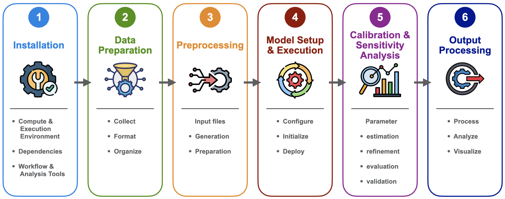
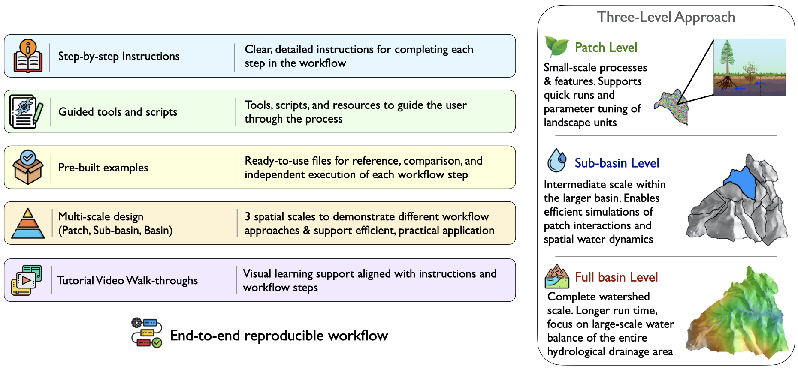

Outline (Manual Blueprint)
Welcome
Purpose
- About the manual, why it exists, what it is for
Intended Audience
- Who this is for/Who should be reading this
- Assumed prerequisite knowledge (i.e. assumes basic knowledge of…provide links to resources where appropriate)
- General Modeling
- Basic R/Rstudio
- GIS and Raster/Vector
- Basic Unix/Linux environment (shell, command line, text editor)
- Git/GitHub
Scope
- What to expect from this book (user will learn….)
- What the manual covers (practical step-by-step guidance)
- What it does not cover (underlying theory of the model, all possible functionality)
Conventions (potentially)
- How to read this document
- Key/Legend for document formatting - regarding use of icons, symbols, different font indications
Manual Structure
- organization
- navigation
- links to sections
- potentially a link to a quick start guide
Support/Resources
- Potentially include author info (Naomi, Janet (contact info?), Ryan)
- RHESSys GitHub repositories (RHESSys code, RHESSysPreProcessing, RHESSysIOinR, ParameterLibrary)
- RHESSys Wiki(s)
- Potentially a FAQ page, a user community forum (i.e. ‘issues’ section on RHESSys Github repo?)
Part I: Foundations & Environment
- This part is about understanding the logic of this tool and setting the computational environment
- intro to what is covered in the section
- expected outcome for this section: functioning modeling environment and clear strategic plan
1 Introduction (The Model)
1.1 Overview of RHESSys
What RHESSys is
- Description
Capabilities
- Integrated Ecohydological Modeling
- Spatial distribution of the landscape
- Feedback loops
- Fire model
Limitations
- High data demands
- Can be computationally intensive
- Maybe any processes that are not well represented? Let users know if the model won’t fit their research question
1.2 Recommended reading/Publications
- Foundational papers
- Overview/Review papers
- Applications
1.3 Workflow overview

- Step 1: Installation - Set up the RHESSys environment
- Step 2: Data Preparation - Gather and format spatial, climate, and validation data
- Step 3: Preprocessing - Generate the landscape representation (Worldfile) and routing (Flowtable) input files
- Step 4: Model Setup and Execution - Define the simulation rules and run RHESSys
- Step 5: Calibration & Sensitivity Analysis - Condition the model (Initialize/reach equilibrium), refine parameters, validate performance
- Step 6: Post Processing - wrangle, analyze, and visualize output data
Key concepts and terminology
(define frequently used terms)
- Spatial hierarchy (basin, hillslope, zone, patch, stratum)
- Input File types (Worldfile, Header, Flowtable, Tecfile, Parameter/Climate files, Output filters)
- State variables (store quantities) and fluxes
- Spatial/Temporal step (i.e., basin daily, patch monthly)
2 Setup (The Software)
2.1 Setup options
(description of each, who should use, when to use, recommendation, link to corresponding install instructions)
2.1.1 Local Installation (MacOS, Linux)
- more advanced users
- users who want more flexibility
2.1.2 Containerized setup (Docker)
- beginners
- Windows users
- portability
2.1.3 HPC/Cloud (SIF/Singularity)
- high-performance computing environments
- cluster users
- large scale, high resolution simulations
2.2 RHESSys Installation
2.2.1 MacOS (include section for Linux as well if necessary or where differs)
Code Dependencies and Operational Requirements
- Terminal application
- Xcode Command Line Tools (compilers/build tools)
- Privileges (i.e. Administrator access)
- Homebrew
- Git
- Libraries (i.e. NetCDF)
Installation steps
- Download code from GitHub
- Zip file
- Clone repository (main, develop)
- Compile
- Shell configuration (adding to path)
- Verify installation
- Common issue and solutions
2.2.2 Docker
- Install Docker Desktop
- Obtaining RHESSys image from the Docker Hub
2.2.3 SIF
- Obtaining RHESSys .sif image
2.3 Installing Workflow & Analysis Tools
2.3.1 R Ecosystem
- R (The engine)
- RStudio (The interface)
- Standard Packages (Extensions - Libraries that expand functionality)
2.3.2 WhiteboxTools for Geospatial Processing
2.3.3 RHESSys-Specific R packages
- RHESSysPreprocessing
- RHESSysIOinR
3 Project Design & Planning (The Strategy)
- will discuss what a user should consider, i.e.:
3.1 Spatial resolution vs. computational cost
- patch resolution/number of patches impact on processing needs & time
- scale - what is necessary to answer users questions: is fine-scale processing necessary?
3.2 Data synchronization & temporal extent
- overlap - i.e., does the temporal period of climate data & observed streamflow data conincide?
- spin-up and calibration time requirements
3.3 Functional constraints
- Feature specific inputs - i.e. to run the fire model, is wind speed/direction and relative humidity data available?
- Does RHESSys output what is needed to answer research questions?
3.4 Defining the project boundaries
- use full basin boundary, representative hillslope, single patch?
4 Example Dataset (The Sandbox)

4.1 Study Site Overview
- Location
- Characteristics
4.2 Dataset Contents
- Raw Data: spatial (and workflow file to generate rasters), formatted climate and observational data
- Preprocessing data: Workflow script, all prerequisite files necessary for generating Worldfile/Flowtable, and completed Worldfiles and Flowtables (for a patch, hillslope, and full basin)
- Simulation files: Ready-to-run workflow scripts with functions to generate all necessary instruction to run the model for different strategies (i.e., single run, multi-run, for calibration & sensitivity analysis)
- Reference outputs: Sample model results
- How to get it
4.3 How to use this data
- Contextual understanding
- Performance Evaluation - verification for user generated files
- Troubleshooting
- Modular learning - start at any step in the manual
Part II: Building and Executing
- This part is about building the model, constructing the foundation for a fuctional simulation
- expected outcome for this section: creating input in order to run the model, generate output, and interpret results
5 User-Acquired Data (The Ingredients)
5.1 Spatial Data
- Required
- DEM (source to obtain)
- Watershed outlet - gauge location coordinates
- DEM Derivatives - generation discussed in later section:
- Watershed Basin boundary
- Sub-basins (hillslopes)
- Slope/Aspect
- E/W Horizons
- Stream Network
- Patches
- DEM Derivatives - generation discussed in later section:
- Recommended (typical) or when applicable:
- Vegetation cover
- Soils
- Landcover/Landuse
- Roads
- Impervious areas
- Climate base stations
- Aspatial rules ID map for multi-scale routing
5.2 Climate Data
- Timeseries data
- Required meteorologic data
- Optional meteorologic data
- Base station
- Supported Input Formats - point, grid, NetCDF - and how to format each
5.3 Observational Data
- used to constrain and evaluate hydrologic and ecophysiological parameterization
- Hydrologic (i.e., Streamflow, Snow, Soil moisture)
- Vegetation (i.e, LAI, Height, NPP, ET, rooting depth)
6 RHESSys-specific Input Files (The Anatomy)
6.1 Definition (Default) Files: The Library
- About
- File types association with each level
- some parameters may need expanded information, i.e. phenolog flag: static,dynamic,drought
- Format - required (ID) and optional parameters
- Parameter values constant
- Base Files/Default values
- Parameter file library
6.2 Worldfile: The Spatial Blueprint
- Hierarchical spatial containment structure - landscape partioning
- Basin
- Hillslope (sub-basin)
- Zone
- Patch, Patch Families/Asptatial patches for multiscale routing
- Stratum
- Architecture
- Identifiers: Pointers (ID’s) linking identifiers to the Climate and Definition files
- State variables, values for stores/fluxes associated with each level
- Header File - conduit between the Worldfile and Climate/Definiton files
6.3 Flowtable: The Pumbing
- Architecture
- Topographic data about each patch
- Routing, Patch connectivity, neighbors
- Partitioning flow, upland patches, stream patches
6.4 Tecfile and Output Filters: Simulation Control
6.4.1 Tecfile: The Alarm Clock
- Manage timing of output printing
- Control simulation events (schedule when non-continuous events occur, i.e. fire, land use change)
- Trigger a worldfile redefinition to update properties of the landscape
6.4.2 Output filters: The Sieve
- specify criteria for selecting and filtering the output data
- Filter rules
- Filter conditions
- Filter Parts: timestep, spatial level, output format/name
- Variables associated with Spatial/Temporal leval of output
- sub-level output
- sub-routine output
- Variable reassignment: name reassignment, arithmetic expressions
7 Preprocessing (The Foundation)
7.1 Environmental Setup
- Standard directory structure
- naming convention
7.2 Raster Processing
- Spatial processing using WhiteboxTools and R
7.3 Generating the Worldfile and Flowtable
7.3.1 The Template File: Recipe for the worldfile
- Format and Initialization
- World objects
- State variables
- Default and base station ID’s
- Required and Optional state variables
- Redefinition template (introduce here or later in advanced?)
- Editing the template, initial conditions
7.3.2 Aspatial rules file for Multi-scale routing
- Format
- Set up for single rule
- Set up for multiple rules - requires map
7.3.3 RHESSysPreprocessing R package
- About
- Prerequisites: spatial data, template, asp rules file if applicable
- R markdown workflow/script - functions
- Run the function to generate Worldfile/Flowtable
8 RHESSys Implementation & Execution (The Ignition)
- Define the simulation rules
- RHESSysIOinR Functions to provide the directions necessary to run RHESSys
- Output filter design
- Tecfile/Output Filter interaction for expected output
- Selecting RHESSys output variables
- Choosing variables relevant to the research questions and analysis goals
- Reassigning/Combining variables
- Executing simulations in R
- Single run
- Multiple runs
9 Post-processing (The Insight)
- Output data wrangling - reading output into R, synthesizing, transforming, rearranging data for use-case
- Analyzing
- Visualizing
Part III: Refinement and Evaluation
- This part is about moving from just a running model to a credible scientific tool.
- intro to what is covered in the section
- the iterative cycle - cyclincal refinement loop
- include a figure/diagram/flowchart about the feedback loop
- refinement not linear path - changing one parameter may require re-balancing the system
- each phase informs the next - often requiring return to previous step
- expected outcome for this section: learning the process to ensure a balanced system
10 Initialization (The Equilibrium)
- Spin-up/Initializing approaches
- Achieving steady-state
- Spin-up Tec event
- State-of-the world output Worldfile
- Typical spin-up output variables
- Determining baseline equilibrium
11 Sensitivity Analysis (The Influence)
- Identifying influential variables - understanding the ‘knobs’, which to turn
- Parameter Space Characterization (establishing realistic bounds/ranges)
- Parameter Selection
12 Calibration (The Optimization)
- Methodology
- Optimization Workflows - (corresponding with ‘real world’ observations)
- Objective Functions and Performance Metrics
- The challenge of equifinality
13 Validation (The Verification or The Credibility)
- judging/evaluation performance
- testing calibrated parameters against data set independent of calibration period
Part IV: Advanced Application
- This part is about exploring complex eco-hydrological scenarios
- intro to what is covered in the section
- expected outcome for this section: ability to move from model development to high impact scientific inquiry
14 Advanced Features (The Expansion)
- beyond the baseline
- moving into specialized simulations
14.1 Disturbance modeling
- disturbance in RHESSys: altering the carbon cycles and redirecting the flow of water and nutrients from the baseline
- predicting ecosystem resilience and recovery over time
14.1.1 Fire Spread and Fire Effects
- about
- compiling RHESSys-WMFire: Boost/WMFire library
- Prerequisites to running the fire model:
- Wind speed and direction data
- Fire definition file parameters
- calculating the fire return interval
- calculating wind parameters (EstimateWindDistrExample.R script)
- Fire effects parameters in vegetation and soil(patch) definition files
- Worldfile header edits
- Add worldfile state variable
- Command line option
- Outputs
- fire write parameter generated output
- spatial level fire outputs and specific fire effects output files
- stochastic
- prescribed
14.1.2 Land Cover/Vegetation change
- biomass pool changes
- drought induced mortality
- fuel treatments
- thinning, controlled burns
- redefine world functionality (redefine_world_: multiplier, thin_remain, thin_harvest, thin_snags, thin_harvest)
14.2 Multi-scale routing - fine-scale heterogeneity
- not sure this belongs in advanced features anymore because it has become pretty standard, and I have introduced it above
- this can be debated!
14.3 Target-driven spin-up
- advanced method of spin-up to reach varying stages of observed ecological states
- run to reach spatially explicit targets, i.e. LAI
- types of spin-up targets
- sources for deriving targets
- Prerequisites to running:
- spin-up target file
- target file header
- spin-up definition file
- worldfile with spinup object ID
- worldfile header pointer
- command line options
14.4 Parallelization (maybe include?)
- run a large watershed in parallel in order to speed up the simulation process
- compiling with openmp
15 Appendices (The Vault)
- Command-line functionality
- History/Legacy tools/functionality
- Code organization
- additional items will become clear as I go along!